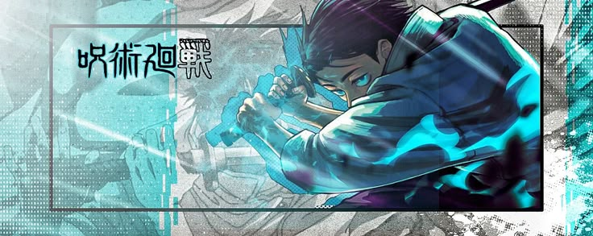
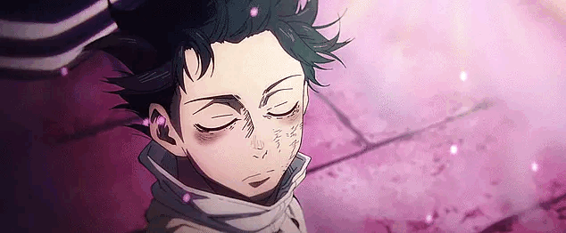
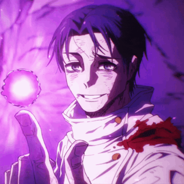

Yuta Okkotsu é um dos personagens mais poderosos de Jujutsu Kaisen. Sua história começa quando ele ainda era um garoto tímido que carregava uma maldição extremamente perigosa.

Quando Yuta era criança, ele era muito próximo de Rika Orimoto, sua amiga de infância. Os dois prometeram ficar juntos para sempre. Porém, Rika morreu tragicamente em um acidente de trânsito. Yuta ficou devastado. Por causa do enorme vínculo emocional entre os dois, sua energia amaldiçoada acabou mantendo a alma de Rika presa ao mundo. Assim nasceu a Rika amaldiçoada, uma entidade extremamente poderosa que passou a proteger Yuta.
A existência de Rika chamou a atenção dos feiticeiros. Yuta era considerado extremamente perigoso porque não conseguia controlar a maldição. Ele acabou sendo levado para a Escola Técnica de Jujutsu de Tóquio, onde conheceu: Maki Zenin Toge Inumaki Panda Satoru Gojo Gojo percebeu que Yuta tinha um potencial absurdo e decidiu ajudá-lo a controlar seus poderes.
Durante seu primeiro ano, Yuta começa a treinar para se tornar um feiticeiro. Ele inicialmente tinha medo de lutar e queria apenas acabar com a maldição de Rika. Porém, ao passar por várias batalhas ao lado de Maki, Toge e Panda, Yuta começa a ganhar confiança. Ele também descobre que Rika não era simplesmente uma maldição que o perseguia: o próprio Yuta estava ligado à origem daquela maldição.
O grande inimigo de Yuta em Jujutsu Kaisen 0 é Suguru Geto, que deseja obter Rika por causa de seu enorme poder. Geto lança o Desfile Noturno dos Cem Demônios, colocando inúmeras maldições contra os feiticeiros. Yuta enfrenta Geto em uma batalha extremamente difícil. No momento decisivo, Yuta consegue utilizar uma quantidade gigantesca de energia amaldiçoada e enfrenta Geto junto de Rika. Yuta vence a batalha.
Yuta é considerado um dos feiticeiros mais poderosos da era moderna porque combina:
⚡ Enorme quantidade de energia amaldiçoada
🗡️ Excelente habilidade com espada
🧬 Técnica de Cópia
👻 Rika
💚 Técnica Reversa para cura
🗣️ Capacidade de utilizar técnicas copiadas
🌀 Expansão de Domínio
🧠 Grande inteligência durante as batalhas
Yuta é, inclusive, um dos poucos personagens reconhecidos oficialmente como feiticeiro de Grau Especial.
